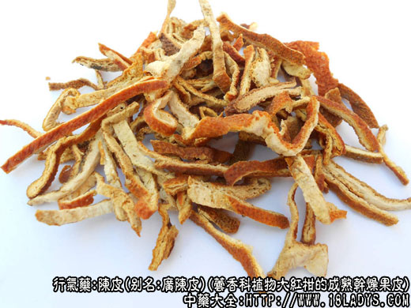

一、广陈皮
别名：广皮、新会皮。
来源：为芸香科植物常棣小乔木大红柑（又名茶枝柑或新会柑）的成熟干燥果皮，均为栽培。
产地：抓产于广东省新会、江门、四会以及广州市郊。
性状鉴别：多呈三裂片瓢形，果柄处连结在一起，裂片椭圆形，两端略尖。长约6～9厘米，中部宽5～8厘米，厚约1～1.5厘米。外表面黄橙色、红橙色或紫橙色，稍显粗糙，有密集的大而深陷的凹形油室，俗称“大棕眼”，对光照视呈透明状。内表面白色海绵状，多向外反卷，亦显油室。质柔软较柔润。气香浓郁，味微甘辛而不苦。
以皮厚，柔软，片大，表皮紫红色，内皮白色，棕眼大而透明，气味香甜浓郁者为佳。习惯认为是陈皮中的珍品。
二、陈皮
别名：桔子皮。
来源：为芸香科植物常绿小乔木福柑、朱桔、蜜柑等多种桔柑的成熟干燥果皮。均为栽培。
产地：主产于四川、湖南、江西、广西、广东、福建、浙江等省。
性状鉴别：福桔、朱桔等桔类产品，呈不规则的裂片状，皮层稍薄，厚约1毫米。外表面橙红色较鲜艳，有密集的较小油室，对广照室不透明。内表面淡黄白色，常带有线形易剥离的维管束（桔络）和薄膜残留。质脆易碎。气微香，味辛苦。
蜜柑类产品，呈不规则的裂片状，片张较大，皮层稍厚约1～2毫米。外表面黄棕色或棕褐色、紫棕色，显粗糙，有密集的细皱和油室，对光照视不透明。内表面白色海绵状，质稍松软。气亦香甜但不及广陈皮，味微辛苦。
三、橙皮。
别名：广柑皮。
来源：为芸香科植物常绿小乔木橙等的成熟干燥果皮。
产地：主产于四川、广东、广西、湖南、湖北、云南、台湾等省。
性状鉴别：多呈四裂片形或不规则的片块，皮厚约1毫米。外表皮橙黄色或淡黄褐色，皮较细，有密集的凸凹交错的细小坑点油室不明显。内表面白色，平滑紧结，常带有不易剥离的网脉状维管束。质坚硬而脆。气微香，味微酸苦而稍辛。
以上除广皮外，用蜜柑类集中加工的产品有建陈皮、潮皮以及樟头红等品种，品质较优。
以朱桔、福桔类集中加工，用火坑干的产品称“坑陈皮”。片张完整，内外颜色鲜艳，为较好品种。
橙皮过去多不使用，近因陈品不能满足需要，橙皮的科属、性味与陈皮相同，也同等药用，但不及陈皮。
各地零散收集的混杂桔、柑、橙皮，经晒干的产品，品种不一，称晒陈皮、土陈皮或杂果皮，品质较次。
主要成分：含橙皮甙、中肌醇、挥发油（主要成分为右旋柠檬烯）和维生素B1。
药理作用：1、健胃、驱风、止呕、止呃；2、祛痰。
炮制：土炒、炒炭或切咀生用。
性味：苦、辛、温。
归经：入脾、肝经。
功能：理气健脾，燥湿化痰。
主治：胸腹胀满，气逆不舒，食欲不振，呕吐腹泻，咳嗽多痰等症。
临床应用：1、治消化不良：凡有腹胀脘闷、食欲不振、恶心呕吐（呕出不消化食物），属脾胃气滞，用陈皮理气开胃。入腹胀腹痛较甚，配苍术、厚朴（方如平胃散）；入呕吐呃逆较甚，则配竹茹，党参，方如橘皮竹茹汤。
2、治疗嗽痰多：凡属湿痰，痰白粘稠、胸脘作闷者，都可用陈皮理气化痰，配半夏更能加强燥湿化痰作用，方如二陈汤（按：陈皮、半夏配合能加强健胃、祛痰和之呕作用，故二陈汤、陈夏益气汤、温胆汤等均为陈皮、半夏同用）。如属热痰、则配蛇胆汁，方如蛇胆陈皮末，用于支气管炎和上呼吸道炎，顺气化痰而平喘的作用较好，小儿尤为适用。
用量：3～9g。
处方举例：1、橘皮竹茹汤（《金匮要略》）：陈皮9g、竹茹9g、党参9g、甘草3g、生姜12g、大枣8枚，水煎服。